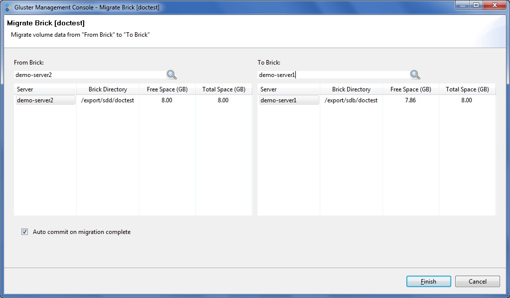
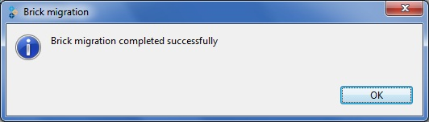

You can migrate the data from one brick to another, as needed, while the volume is online and available.You can migrate disks, that is, move data from one disk to another within your cluster. You might want to do this, for example, when upgrading a disk to another with a larger capacity.
When migrating a disk, the Gluster Management Console allows you to select both the source and destination bricks. After initiating a disk migration, the Task tab displays the status of the migration, and allows you to cancel the migration, if necessary.
To migrate volume data from one brick to another, perform the following steps.
The Migrate Brick window is displayed.

